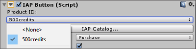
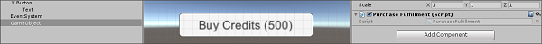

Codeless IAP
Codeless IAP 是在 Unity 应用程序中实现应用内购 (IAP) 的最简单方法。借助 Unity Editor 提供的一个接口，只需编写最少的脚本即可配置基本的 IAP 集成。
Codeless IAP 可处理实际的 IAP 交易而无需任何代码。在 Editor 中实现 Codeless IAP 的过程包括两个步骤：
1.将 __IAP 按钮__添加到游戏中。 2.在 IAP Catalog 中定义__商品__。
Unity 购买__系统 (Unity Purchasing System) 在运行时配置您在目录中填充的商品。玩家选择 IAP 按钮__时，便会启动相关商品的购买流程。
注意：您仍然需要通过编写脚本来定义玩家如何访问其新购买的内容。有关更多信息，请参阅以下的执行购买部分。
实现 Codeless IAP
开始之前，请安装最新的 Unity IAP SDK。请参阅有关设置 Unity IAP 的文档以了解更多信息。
将 IAP 按钮添加到场景
要将 IAP 按钮__添加到场景，请在 Unity Editor 中选择 Window > Unity IAP > Create IAP Button__。
在 IAP Catalog 中填充商品
按以下两种方式之一打开 IAP Catalog GUI：
- 选择 Window > Unity IAP > IAP Catalog。
- 或者，选中 IAP Button 后，在 Inspector 中找到其 IAP Button (Script) 组件，然后单击 IAP Catalog…。
下一步，使用该 GUI 为目录中的每个商品定义以下属性。
- Product ID__（商品 ID）：通过此 ID 与应用商店通信（请注意，可通过 Advanced__ 选项使用特定于商店的唯一 ID 来覆盖此 ID）。
- Product Type（商品类型）__：包括 Consumable__（消耗品）、Non-Consumable__（非消耗品）或 Subscription__（订阅）。

注意：__IAP Catalog__ GUI 还提供可用于配置商品的其他工具。在导出目录以便上传到各自商店之前，还必须填写描述和定价信息。有关这些设置的详细信息，请参阅有关定义商品的文档以了解。
自动初始化 UnityPurchasing
必须初始化 IAP SDK 才能正常使用 IAP。在运行时加载 Codeless IAP 按钮__或 IAP 监听器的第一个实例时，自动进行此操作。但是，您可能需要在 IAP 按钮或 IAP 监听器出现在游戏中之前初始化 SDK（例如，在应用程序启动后提供内购推荐 (IAP Promo) ）。在此类情况下，请选中 IAP Catalog__ 窗口底部的 Automatically initialize UnityPurchasing (recommended)。这样可以确保在应用程序启动时 UnityPurchasing 立即初始化，并消除对无码实例生命周期的依赖。
目录必须至少包含一个商品才能运行。
注意：您可以将自动初始化功能与 IAP 按钮或监听器结合使用。在此情况下，SDK 会在游戏启动时初始化，而不是在场景中加载 IAP 按钮或监听器的第一个实例时初始化。但是，如果同时需要在脚本中手动初始化，则不应启用自动初始化，因为这可能导致错误。
执行购买
商品目录至少包含一个商品时，您可以定义在购买完成或失败时的 __IAP 按钮__行为。
1.在场景视图中选择 IAP 按钮__，然后在 Inspector 中找到其 IAP Button (Script)__ 组件。 2.从 Product ID 下拉列表中选择要链接到 IAP 按钮__的商品。  3.创建自己的函数来执行购买，或者导入资源来实现此目的（请参阅以下代码示例）。 4.将购买执行脚本作为组件应用于游戏对象。  5.返回到 Inspector 中的 IAP Button (Script)__ 组件，然后单击加号 (+) 按钮，从而将函数添加到 On Purchase Complete (Product) 列表。 6.将附带购买执行脚本的游戏对象拖到 On Purchase Complete (Product) 事件字段（如下图所示），然后从下拉菜单中选择您的函数。
购买执行脚本代码示例：
public void GrantCredits (int credits){
userCredits = userCredits + credits;
Debug.Log("You received " + credits " Credits!");
}
运行游戏来测试 IAP 按钮。
扩展功能
导出到应用商店
为了使购买功能正常运行，必须在相应的应用商店中配置商品目录。为此，可将商品目录以 CSV 文件格式导出到 Google Play，或者以 XML 文件格式通过 Apple 的 Application Loader 导出到 iTunes Store。
Google Play
要将商品目录导出到 Google Play：
1.在 IAP Catalog 窗口 (Window > Unity IAP > IAP Catalog) 中，确保每个商品已定义以下字段：
* ID
* Type
* Title 和 Description
* Price 或 Pricing Template ID
2.向下滚动，然后选择 App Store Export。
3.选择 Google Play CSV。
4.选择要保存 CSV 文件的位置。
如需将导出的目录上传到 Google Play 的完整指南，请参阅 Android 开发者 (Android Developers) 网站上的 Google 应用内计费 (Google in-app billing) 文档。
Apple iTunes
要将商品目录导出到 Apple iTunes：
1.在 IAP Catalog 窗口 (Window > Unity IAP > IAP Catalog) 中，确保每个商品已定义以下字段：
* ID
* Type
* Title 和 Description
* Price Tier 和 Screenshot path
*
Apple SKU（可在 iTunes Connect 中找到）
* Apple Team ID（可在 Apple 开发者网站中找到）
2.向下滚动，然后选择 App Store Export。
3.选择 Apple XML Delivery。
4.选择要保存 XML 文件的位置。
如需有关通过 Apple Application Loader 进行导入的完整指南，请参阅 iTunes Connect 网站上的 Application Loader 文档。
Restore 按钮
包括 iTunes 在内的一些应用商店要求应用程序具有 Restore 按钮。Codeless IAP 提供了一种在应用程序中实现 Restore 按钮的简单方法。
要添加 Restore 按钮：
1.将 IAP 按钮__添加到场景 (Window > Unity IAP > Create IAP Button)。 2.选择 IAP 按钮__后，在 Inspector 中找到其 IAP Button (Script) 组件，然后从 Button Type 下拉菜单中选择 Restore（该组件的大部分其他字段将从 Inspector 视图中消失）。
用户在运行时选择此按钮时，该按钮会为当前商店调用购买恢复 API。此功能对 iOS App Store、Mac App Store、Windows 应用商店、Samsung Apps 和 Cloud Moolah 应用程序商店有效。在其他平台上，您可能希望隐藏 Restore 按钮。
如果恢复成功，Unity IAP 会在与该商品关联的 IAP 按钮__上调用 On Purchase Complete (Product)__ 函数。
有关更多信息，请参阅有关恢复购买的文档。
IAP 监听器
Codeless IAP 将成功和失败的购买事件分发给层级视图中处于活动状态的 IAP 按钮 (IAP Button) 组件。但是，在处理成功的购买时，有时可能会很难有或不希望有处于活动状态的 IAP 按钮。例如，如果购买在完成前中断，Unity IAP 会在下次初始化时再次尝试处理该购买。您可能希望在应用程序启动后立即执行此操作，在这种情况下，__IAP 按钮__不合逻辑。Codeless IAP 正好包含适合这些情况的 IAP 监听器 (IAP Listener) 组件。场景层级视图中处于活动状态的 IAP 监听器__可接收无法分发给 IAP 按钮__的任何购买事件。
添加 __IAP 监听器__：
1.在 Unity Editor 中，选择 Window > Unity IAP > Create IAP Listener。 2.按照关于编写购买执行脚本作为游戏对象组件的步骤执行操作。 3.在场景中选择 __IAP Listener__，并在 Inspector 中找到 IAP Listener (Script) 组件，然后单击加号 (+) 按钮，从而将函数添加到 On Purchase Complete (Product) 列表。 4.将附带购买执行脚本的游戏对象拖到该组件的 Inspector 中的事件字段，然后从下拉菜单中选择您的函数。
访问 Unity IAP 的扩展功能
Codeless IAP 功能未展示 Unity IAP 的大多数扩展功能。但是，Codeless IAP 是基于现有脚本 API 实现的，因此可在 IAPButton.cs 脚本 (Assets/Plugins/UnityPurchasing/script/IAPButton.cs) 中修改其诸多功能以满足您的需求。
要使用 Unity IAP 的扩展功能，请访问由 IStoreListener.OnInitialize 返回的 Unity IAP IStoreController 和 IExtensionProvider 实例。
- 2018–05–30 页面已修订